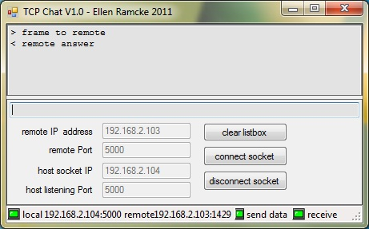

TCP Communication in VB.NET
Introduction
My sample demonstrates how You can use TCPListener and TCpclient classes and also how to use asynchronous read.
My class TCPChat supports full OOP. Therefore You can add this class very easy to Your existing project.
Building the Sample
There are no special requirements or instructions necessary. You only need a networkadapter.
Description
The sample indentificates the network adapter of the local machine (host) displays this items in textboxes (host). Enter a desired host port number on which You want to communicate now (host). In the textboxes remote You enter the items of the remote computer who is listening.
Press button connect.
You connect the app with the host socket. Enter the text to be sent into the box an press key return to finish this. Now the message wil be sent to the given remote address. In case that there is no remote listening a exception (timeout after 15 seconds) will occur. In this case press disconnect button and try it again with other remote parameters.
The easiest way to test this is to install this sample on 2 computer in a common subnetwork.
sreenshot: two computer in a common network

remarks: this sample also accepts DNS names instead IP Adresses in the boxes. Therefore You can communicate also via internet.
Here You can see a live demo: http://social.msdn.microsoft.com/Forums/en-US/vbgeneral/thread/be0bc7c6-4fe7-490d-860b-e84eed05b7c6
sreenshot: testing connection with yourself over internet. All You need is a dynDns.org name of Your router and configure a portforwarding to the host IP address:

the most important code snippsets are:
Async reading a frame
As You see, we create from the incoming frame (IAsyncResult) a instance of the clientsocket. With getStream().Read method You readout the data. At last you have to start a new Async Read and post the data back to the main thread (UI).A tcp read runs on a secondary thread in background and is started with the BeginAcceptTcpClient method. Now we take a look at the DoAccept method:
Private Sub DoAccept(ByVal ar As IAsyncResult)
Dim sb As New StringBuilder
Dim buf() As Byte
Dim datalen As Integer
Dim listener As TcpListener
Dim clientSocket As TcpClient
If Not isConnected Then Exit Sub
Try
listener = CType(ar.AsyncState, TcpListener)
clientSocket = listener.EndAcceptTcpClient(ar)
clientSocket.ReceiveTimeout = 5000
'update 10.5.2011
iRemote = clientSocket.Client.RemoteEndPoint
pLocal = clientSocket.Client.LocalEndPoint
Catch ex As ObjectDisposedException
MsgBox("DoAccept ObjectDisposedException " & ex.Message, MsgBoxStyle.Exclamation)
' after server.stop() AsyncCallback is also active, but the object server is disposed
Exit Sub
End Try
Try
With clientSocket
datalen = 0
' somtimes it occurs that .available returns the value 0 also data in buffer exists
While datalen = 0
' data in read Buffer
datalen = .Available
End While
buf = New Byte(datalen - 1) {}
'get entire bytes at once
.GetStream().Read(buf, 0, buf.Length)
sb.Append(Encoding.ASCII.GetString(buf, 0, buf.Length))
.Close()
End With
receiveStatus = True
Catch ex As TimeoutException
MsgBox("doAcceptData timeout: " & ex.Message, MsgBoxStyle.Exclamation)
receiveStatus = False
clientSocket.Close()
Exit Sub
Catch ex As Exception
MsgBox("doAcceptData: " & ex.Message, MsgBoxStyle.Exclamation)
receiveStatus = False
clientSocket.Close()
Exit Sub
Finally
RaiseEvent recOK(receiveStatus)
End Try
' post data
sc.Post(New SendOrPostCallback(AddressOf OnDatareceived), sb.ToString)
' start new read
server.BeginAcceptTcpClient(New AsyncCallback(AddressOf DoAccept), server)
End Sub
Private Sub DoAccept(ByVal ar As IAsyncResult) Dim sb As New StringBuilder Dim buf() As Byte Dim datalen As Integer Dim listener As TcpListener Dim clientSocket As TcpClient If Not isConnected Then Exit Sub Try listener = CType(ar.AsyncState, TcpListener) clientSocket = listener.EndAcceptTcpClient(ar) clientSocket.ReceiveTimeout = 5000 'update 10.5.2011 iRemote = clientSocket.Client.RemoteEndPoint pLocal = clientSocket.Client.LocalEndPoint Catch ex As ObjectDisposedException MsgBox("DoAccept ObjectDisposedException " & ex.Message, MsgBoxStyle.Exclamation) ' after server.stop() AsyncCallback is also active, but the object server is disposed Exit Sub End Try Try With clientSocket datalen = 0 ' somtimes it occurs that .available returns the value 0 also data in buffer exists While datalen = 0 ' data in read Buffer datalen = .Available End While buf = New Byte(datalen - 1) {} 'get entire bytes at once .GetStream().Read(buf, 0, buf.Length) sb.Append(Encoding.ASCII.GetString(buf, 0, buf.Length)) .Close() End With receiveStatus = True Catch ex As TimeoutException MsgBox("doAcceptData timeout: " & ex.Message, MsgBoxStyle.Exclamation) receiveStatus = False clientSocket.Close() Exit Sub Catch ex As Exception MsgBox("doAcceptData: " & ex.Message, MsgBoxStyle.Exclamation) receiveStatus = False clientSocket.Close() Exit Sub Finally RaiseEvent recOK(receiveStatus) End Try ' post data sc.Post(New SendOrPostCallback(AddressOf OnDatareceived), sb.ToString) ' start new read server.BeginAcceptTcpClient(New AsyncCallback(AddressOf DoAccept), server) End Sub
Start async read
Try
server = New TcpListener(IPAddress.Parse(hostAdress), hostPort)
Catch ex As Exception
MsgBox("server create: " & ex.Message, MsgBoxStyle.Exclamation)
End Try
Try
With server
.Start()
.BeginAcceptTcpClient(New AsyncCallback(AddressOf DoAccept), server)
isConnected = True
End With
Catch ex As Exception
MsgBox("server listen: " & ex.Message, MsgBoxStyle.Exclamation)
isConnected = False
Finally
RaiseEvent connection(isConnected)
End Try
Try server = New TcpListener(IPAddress.Parse(hostAdress), hostPort) Catch ex As Exception MsgBox("server create: " & ex.Message, MsgBoxStyle.Exclamation) End Try Try With server .Start() .BeginAcceptTcpClient(New AsyncCallback(AddressOf DoAccept), server) isConnected = True End With Catch ex As Exception MsgBox("server listen: " & ex.Message, MsgBoxStyle.Exclamation) isConnected = False Finally RaiseEvent connection(isConnected) End Try
Capturing data
when You download the project, You will find file TCP-chat_comunication_on_LAN-sendMessage_hello_world.txt.
This is a full data capturing made with wireshark software.
The principal sequences are:
Frame host remote ================================ 1 SYN > 2 < SYN,ACK 3 ACK > ------ connected ----- 4 PSH,ACK > ------ data sent ----- 5 FIN,ACK > 6 < ACK 7 < FIN,ACK 8 ACK > ------ disconnected ----
Frame host remote ================================ 1 SYN > 2 < SYN,ACK 3 ACK > ------ connected ----- 4 PSH,ACK > ------ data sent ----- 5 FIN,ACK > 6 < ACK 7 < FIN,ACK 8 ACK > ------ disconnected ----
Appendix (msdn)
The TcpListener class provides simple methods that listen for and accept incoming connection requests in blocking synchronous mode. You can use either a TcpClient or a Socket to connect with a TcpListener. Create a TcpListener using an IPEndPoint, a Local IP address and port number, or just a port number. Specify Any for the local IP address and 0 for the local port number if you want the underlying service provider to assign those values for you. If you choose to do this, you can use the LocalEndpoint property to identify the assigned information, after the socket has connected.
Use the Start method to begin listening for incoming connection requests. Start will queue incoming connections until you either call the Stop method or it has queued MaxConnections. Use either AcceptSocket or AcceptTcpClient to pull a connection from the incoming connection request queue. These two methods will block. If you want to avoid blocking, you can use the Pending method first to determine if connection requests are available in the queue.
The TcpClient class provides simple methods for connecting, sending, and receiving stream data over a network in synchronous blocking mode.
In order for TcpClient to connect and exchange data, a TcpListener or Socket created with the TCP ProtocolType must be listening for incoming connection requests. You can connect to this listener in one of the following two ways:
Members of class TCPChat
.....
Public Event Datareceived(ByVal txt As String)
Event: returns the received message bach to event handle of the UI thread
.....
Public Event connection(ByVal cStatus As Boolean)
Event: returns the status of the socket connection to event handle of the UI thread
.....
Public Event sendOK(ByVal sStatus As Boolean)
Event: the status of sending a frame successfull
.....
Public Event recOK(ByVal sReceive As Boolean)
Event: returns status of successfull reading a frame
.....
Public ReadOnly Property Remote() As EndPoint
Property: returns remote Ednpoit of connection
.....
Public ReadOnly Property Local() As EndPoint
Property: returns host Endpoint of socket connection
.....
Public Sub connect(ByVal hostAdress As String, ByVal hostPort As Integer)
Method: make socket connection by given hostaddress and port
.....
Public Sub disconnect()
Method: disconnect the host socket
.....
Public Sub SendData(ByVal txt As String, ByVal remoteAddress As String, ByVal remotePort As Integer)
Method: send a frame to the given remote address and port
.....